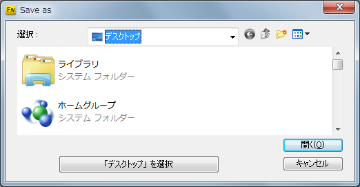

9patch2fire
Overview
The 9patch2fire is script for Fireworks to create android 9patch.
Prerequisites Adobe fireworks cs4 or higher. Xhdpi image. I strongly recommend vector image.
9patch2fire allow easily positioned the dot, and reusability for position.
9patch2fire can output multiple densities image when single action.
How to use
9patch2fire have two scripts ready.jsf and make.jsf.
Open the your image file in Fireworks.
Run ready.jsf
Run ready.jsf at Command-Runs Script
ready.jsf added new layers "content" and "patches" to your image.

Create content
Create content image for yourself.
Image densities is xhdpi.(320pixcel per inch)

Draw content and patches
Draw content area and patches area. It is square or other.
Run make.jsf
Finaly run make.jsf.
Display save dialogue if you do not save.
Next choice output directory.

9patch2fire create "output" directory in you selected location.
Output directory included each density folda include image and originalImage.png.
You do not need originalImage.png. it's backup to original image.
You must delete originalimage.png before you include images on your android project.

Done.

Licence

Query
githubかfirespeed.org